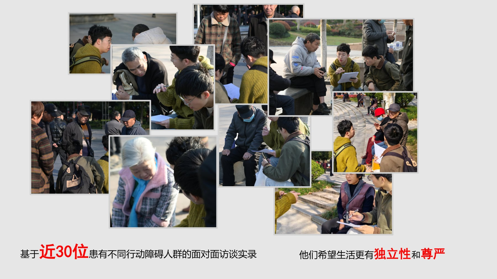
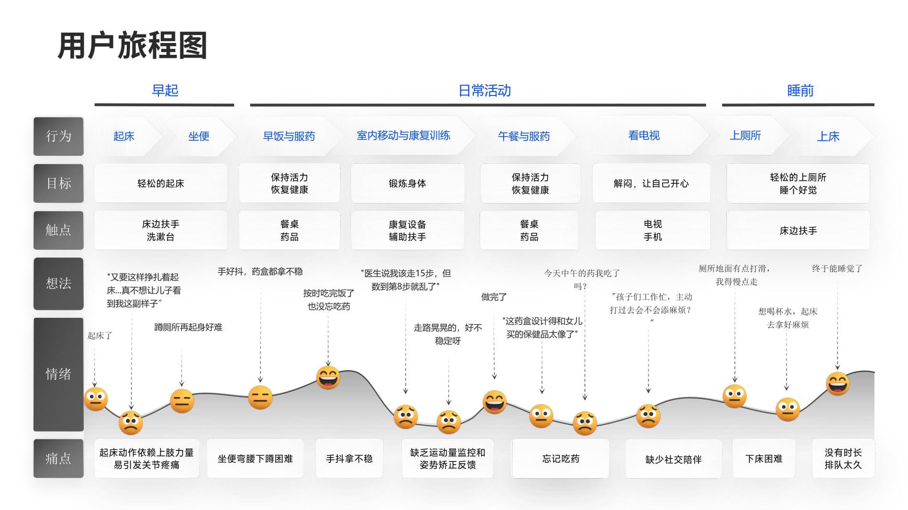
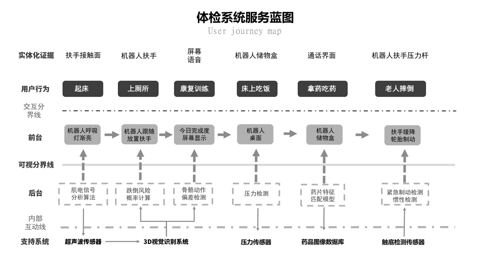

Challenge
康复设备既要支持患者安全训练，也要让康复师快速设置、观察和调整训练过程。
医疗产品设计 · 康复训练设备
针对脑卒中及术后患者的康复训练设备。页面从用户研究开始，呈现行动障碍人群的真实痛点，再说明产品如何支持主动与被动训练、数据反馈和康复师操作。

康复设备既要支持患者安全训练，也要让康复师快速设置、观察和调整训练过程。
负责用户研究整理、产品结构表达、人机接触点优化、整机视觉与展板信息重排。
通过可调节支撑、清晰控制面板和稳定机身结构，平衡训练效率、护理操作和患者安全感。
方案把传统人工辅助训练转化为设备协同训练，体现医疗产品中可靠、可用和可被信任的设计判断。
调研记录显示，行动障碍人群真正困扰的不只是单次训练，而是起床、如厕、服药、室内移动和社交减少等连续问题。康复设备需要进入日常生活节奏，而不是只停留在医院器械语境。

User Journey

产品支持主动与被动训练模式。机械结构提供稳定牵引，传感反馈则帮助康复师了解患者训练状态，让训练从经验判断转向更可追踪的过程。
System Map

Board Reframed


这样处理后，评审者可以先读懂你的研究和设计判断，再按需查看完整展板信息。